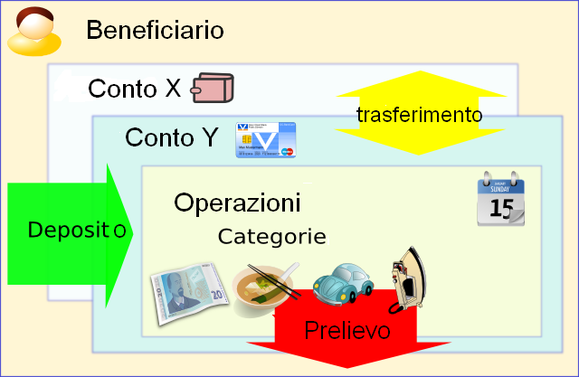

Utilizzo di Money Manager Ex
Importazione
Esportazione
Money Manager Ex è un libero, facile da usare software di finanza personale per gestire i vostri soldi. Aiuta soprattutto organizzare le finanze e tiene traccia di dove, quando e come il denaro va e viene.
Pensate a Manager Ex Money (MMEX) come un libretto di assegni computer che vi permette di bilanciare i conti, organizzare, gestire e generare rendiconti per le vostre finanze.
E 'anche un ottimo mezzo per tenere iaggiornati i vostri valori finanziari.
Il primo obiettivo di MMEX è semplificare i processi di gestione finanziaria senza renderla un operazione complessa come accade con i programmi di gestione finanaziaria più diffusi e conosciuti.
Lo scopo di questo manuale è quello di darvi alcune istruzioni di base per l'utilizzo di MMEX. Questo manuale seguirà l'evoluzione del programma e con esso sarà aggiornato. Quindi, controllate ogni aggiornamento del programma per scoprire le ultime novità per un miglior utilizzo di MMEX.
- Eseguire sempre e regolarmente una copia di backup del database .mmb o .emb.
-
Se installate o aggiornate ad una nuova versione MMEX, assicuratevi di
aver effettuato una copia del vostro database .mmb or .emb prima di
farlo.
Mantenere organizzate le finanze richiede una
certa conoscenza delle materie economiche. La gestione finanaziaria
diventa complicata quando non si ha una chiara comprensione dei flussi
finanaziari e dicome questi siano influenzati da entrate ed uscite. Il
debito, generalmente è la risultante del superamento delle uscite sulle
entrate.
Il primo
passo verso una migliore organizzazione finanziaria è mantenere buoni
dischi. Solo
se vi è la comprensione di come e cosa abbia generato le spese,
anche su base giornaliera, si avrà la possibilità di poter ridurre tali
spese.
Vi siete accorti che avete speso 600 euro in acquisto di film in DVD l'anno scorso? Quante volte li avete utilizzati? Pensate che ora che quei 600 € vi sarebbero tornati utili per una riparazione non prevista dell'auto avvenuta due giorni fa? Naturalmente non vi c'è una
risposta giusta o sbagliata in assoluto su come si dovrebbero spendere i
soldi. Dopo tutto, siete voi
che avete guadagnato quei soldi e il diritto di spenderli è legato al vostro modo di vedere le cosa. Ma si può sempre cercare di far rendere al meglio i vostri soldi, cercate di avere una miglior "ritorno" per ogni dollaro, euro o
sterlina investita.
Qui entra
in gioco questo programma di gestione finanziaria. Vi aiutano
raggruppare o suddividere i vostri dati finanziari per darvi una
visione migliore di quello che sta accadendo. Ricordate
sempre che l'affidabilità del software è proprozionale alla correttezza
dei dati che inserite e che esso non basta di certo a risanare le
vostre finanaze. Ma
già l'aver cominciato ad utilizzare un programma di gestione
finanaziaria vi mette sulla buona strada per utilizzare al meglio ogni
euro o dollaro che sia.
Leggi su come utilizzare Manager Ex Money.
Money Manager Ex organizza la finananza reale attraverso i concetti di operazioni. Una operazione o transazione è un evento finanziario in cui denaro e/o servizi sono scambiati. Tali operazioni possono essere un pagamento a saldo o parziale copertura di un prestito, l'acquisto di un auto, mangiare fuori al ristorante e così via. Ogni operazione o transazione è associata a un Conto e ad una Categoria.

Un Conto è un registro di
quello che avete o dovete.
Ad
esempio, il conto corrente è un rapporto/registro del denaro depositato
in banca, che è disponibile per assegni, prelievi bancomat o per
effettuare le operazioni di pagamento utilizzando una carta di debito
(carta bancomat). L'estratto conto di una carta di credito è un rapporto
del denaro dovuto a una società di carte di credito quando si effettua un
pagamento tramite una carta di credito. L'insieme di tutte le operazioni e/o transazioni aumentano o diminuiscono il bilancio in uno o
più conti.
Una categoria è una classificazione della fonte o destinazione dell
denaro.
Per esempio: lo stipendio è il denaro che guadagnate dal vostro lavoro ed è un tipo di
reddito o entrata. Il denaro ricevuto da un investimento
come interesse è anche un tipo di reddito. Questi Formano
una categoria di Reddito, con
varie sottocategorie come stipendio o Reddito da Investimenti.
Se si vuole sapere il costo dei pasti fuori casa, quanto si spende
in generi alimentari, quanto si spende in carburante per l'auto o quanto la
vostra auto vi costa in manutenzione, è necessario creare categorie di spesa e
sottocategorie come segue:
Create la
categoria principale Alimenti, con sottocategorie Drogheria, Panificio, Ristorante e Supermarket, lo stesso per la categoria Auto con le relative sottocategorie di Carburante, Manutenzione, Assicurazione, ecc.
Le Categorie permettono di tenere traccia di redditi e spese, entrate ed uscite.
Possiamo anche utilizzare MMEX come un sistema che registra flusso quantità del denaro contante e non.
I Rendiconti informano della posizione in cui si trova il denaro. Il denaro arriva in forma di Depositi (entrate e redditi), se ne va con i Prelievi (uscite e spese), ed infine c'è il denaro che
si sposta all'interno del sistema:i Trasferimenti. (bonifici, pagamenti con carte, ecc.)
Per esempio: il denaro arriva sul vostro conto sotto
forma il tuo stipendio, uno stipendio. Il denaro va dal vostro conto al supermercato tramite la vostra carta di
credito o di debito (il bancomet) quando effettuate degli acquisti alimentari. Il
denaro è trasferito dal tuo conto sulla vostra carta di credito quando
effettuate un bonifico o inviate denaro ad un vostro familiare che si
trova all'estero. Il denaro esce anche per i pagamenti in contanti per le vostre spese presso il negozio all'angolo.
In questo caso MMEX richiede anche Beneficiario , dove i beneficiari sono il negozio all'angolo, il
datore di lavoro o il supermercato.
Un Beneficiario è colui che beneficia di quella data operazione di prelievo o deposito, sia che riceva o invii denaro (NdT: Tuttavia in Italia per beneficiario si intende generalmente solo chi riceve il denaro, ma non dobbiamo dimenticare che il programma è sviluppato in paesi anglosasassoni).
Per consentire a MMEX di lavorare correttamente, è importante registrare tutte le operazioni fatte nei conti appropriati. Anche se non avete l'abitudine di inserire attentamente le operazioni etransazioni, è importante controllare ed eventualmente integrare le operazione quando ricevete il vostro estratto conto mensile della carta di credito e del conto corrente bancario.
Inserendo le operazioni, MMEX potrà fornirvi qualche informazione utile. Per esempio, vi darà il saldo attuale del vostro/i conti. Vi fornirà informazioni su quanto si è speso e quanto si è guadagnato, anche con l'utilizzo di pratici grafici e pagine riassuntive. Tutte cose che potranno aiutarvi a gestire al meglio il vostro denaro.
Per iniziare a utilizzare Money Manager, si deve iniziare con la creazione di un database. Tutte le operazioni registrate con MMEX sono memorizzate in un file di database (file con estensione .mmb) sul disco rigido. Questo file contiene tutte le componenti dei conti, categorie, operazioni che compongono la vostra situazione finanziaria.
E' anche possibile creare più di un database di MMEX ma di solito non è necessario. Un file può contenere tutte le operazioni, transazioni e conti. Non c'è alcun limite al numero di conti o di operazioni che si possono avere nel file di database. L'unico motivi in cui avrebbe senso avere più di un database è nel caso si debba utilizzare MMEX per gestire i vostri conti finanziari personali e quelli di una vostra società o piccola impresa. Oppure, se si condivide il computer con un'altra persona e si desisdera mantenere le contabilità separate tra loro.
Al primo avvio di MMEX, il programma tenterà di caricare l'ultimo database che è stato aperto. Se non esiste alcun database, all'utente verrà richiesto o di aprire un database esistente (specificandone la posizione), o di crearne uno nuovo.
Se è necessario creare un database nuovo, si può anche selezionare dal menù File-> Nuovo database.
Come prima cosa verrà richiesto di specificare un nome ed una posizione in cui salvare il vostro nuovo database (.mmb), nella posizione specificata. Il vostro nuovo database è stato creato e verrà visualizzata una guida (wizard) per aiutarvi nella personalizzazione del nuovo database e aiutarvi a creare il tuo primo conto .
La creazione guidata del nuovo database richiederà di scegliere la valuta di base in uso sui conti e un nome utente.
MMEX viene fornito con un set predefinito di valute che è possibile utilizzare, corrispondenti alle principali valute di internazionali. I nuovi conti utilizzeranno quindi questa Valuta Base come l'impostazione predefinita. Questo consente ai conti intrattenuti in nazioni diverse di convertire il loro valore nella valuta di base.
Nome Utente è inoltre richiesto, e viene visualizzato come titolo nella Home Page.
Entrambe queste impostazioni possono essere cambiate in seguito, se necessario selezionando il menu: Strumenti -> Opzioni
Il nome
del database sarà visualizzato nella barra del titolo aiutando a ricordare quale database è visualizzato.
Il nuovo file di database (.mmb) NON è
crittografato.
l database può ora essere crittografato come segue: dal menu selezionare File-> Salva Database con nome...
Selezionate la posizione e file .mmb o create un nuovo nome per il database.
Cambiate nel menù a tendina del box di dialogo "Salva come:" da .mmb a file criptato con estensione .emb e quindi cliccate su "Salva"
Immettere una password per il file - È necessaria la password quando si vorrà aprire il database.
Suggerimenti:
Ricordatevi di eseguire copie di backup dei vostri file di database .mmb o .emb
Il file di database non è criptato:
Questo significa che chiunque ne conosca utilizzo e contenuto, può aprire il file e leggerne i dati in esso memorizzati.
Quindi
assicuratevi che se memorizzate informazioni finanziarie riservate, il file sia
adeguatamente custodito.
Per i file di database crittografati: ricordate la vostra password.
Quando si crea un database, verrà automaticamente richiesto di creare un nuovo conto.
Per creare manualmente un nuovo conto, dal menu, selezionare Conti-> Nuovo Conto.
Si aprirà la procedura di creazione guidata conto. La procedura guidata aiuterà a raccogliere le informazioni essenziali del Conto Nome e Tipologia. Il tipo di conto non sarà più modificabile, mentre il nome potrà essere cambiato, vedi in proposito modifica delle informazioni di un conto .
Nome del conto: è
un campo obbligatorio. Si raccomanda di scegliere un nome univoco
e che abbia una relazione col conto reale.
Esempio: per un conto corrente con un istituto bancario invece del
complicato codice IBAN o simile si può adoperare il nome dell'istituto
bancario, tipo Unicredit, Intesa, ecc.
Tipo di Conto: MMEX attualmente supporta tre tipi di conto:
"Conto Corrente / Libretto Risparmio": Questo è il tipo più comune di conto utilizzato da MMEX, e in grado di gestire conti del tipo più comune, come i conti correnti, conti di risparmio e libretti di risparmio. Supporta tre tipi di operazioni: deposito, prelievo e trasferimento.
"Conti a Termine": analogo al conto corrente con l'eccezione che appaiono
nella loro sezione specifica nella Pagina Principale e può essere visualizzato o nascosto nei periodi
di utilizzo normale. Per ulteriori spiegazione vedere l' Esempio configurazione di un conto .
Questi tipi di conti specifici conti a termine, conti di ammortamento bancario, conti
di prestito, o conti di investimento con reddito prestabilito. Questi conti hanno una propria sezione di bilancio nella pagina Principale. Questo conto supporta tre
tipi di operazioni già citati.
"Conti d'Investimenti": Questo tipo di conto consente di tenere traccia di titoli, obbligazioni,fondi comuni d'investimento, bond, ecc.
Per una corretta gestione si deve disporre del saldo per i conti che si desidera aggiungere a MMEX. È possibile ottenere queste informazioni tramite il più recente estratto conto della banca o della carta di credito. Per tenere traccia di ulteriori informazioni sui conti, è possibile inserire i dettagli opzionali del conto, come numero di conto, piazza, sito web, informazioni di contatto e di accesso. È inoltre possibile inserire note aggiuntive sul conto nel campo Note.
la maggior parte dei conti è facilmente configurabile inserendo semplicemente il saldo iniziale. Andando avanti è necessario solo aggiungere le operazioni e transazioni oltre tale data per avere l'ultimo saldo.
Lo stato del conto può essere
impostato su "Aperto" o "Chiuso". I conti chiusi sono quelli
non più attivi. L'impostazione di questo stato è solo un modo per semplificare la visione d'insieme nel tuo pannello di navigazione a discesa. Per nascondere in modo permante i conti chiusi dal menù Strumenti-> Opzioni-> Visualizzazioni .Vedere Suggerimenti sull'uso del pannello di navigazione e Pagina Principale
Valuta: Questa è
inizialmente impostata secondo la Valuta di Base scelta inizialmente al momento della creazione del
database. Y ou can set the currency that is associated
with this account and can be different to the base currency. ou Y può impostare la
valuta che è associato a questo account e può essere diverso per la valuta di
base. Il tasso di
cambio della valuta può essere modificato utilizzando il menu: Strumenti
-> Gestione valuta
Esempio: Lei vive Italia ed utilizza gli Euro, ma ha anche un conto bancario negli Stati Uniti in dollari USA. La maggior parte dei suoi conti sono quindi in Euro. Qual'è il valore reale del tuo conto bancario statunitense? Cambiando o aggiornando il tasso di cambio Euro-Dollaro, è possibile ottenere il valore corretto del vostro conto.
È anche possibile contrassegnare i conti come 'Preferiti'. Questo viene utilizzato per modificare l'elenco dei conti che sono visibili nel pannello di navigazione. Vedere Suggerimenti sull'uso del pannello di navigazione e Pagina Principale
Abbiamo un Libretto di Risparmio con $ 1250, un Conto Corrente con $ 500, una MasterCard con un debito di € 250,
una carta Visa con un debito di € 475, un Mutuo Ipotecario per la casa di 230.965 € e un conto di risparmio di
5000 €.
Imposteremo i conti come segue:
|
Tipo di Conto |
Nome Conto |
Saldo Iniziale |
|
Conto Corrente/Libretto di Risparmio |
Libretto di Risparmio |
€ 1.250,00 |
|
|
Conto Corrente |
€ 500,00 |
|
|
MasterCard |
- € 250,00 |
|
|
Carta Si |
- € 475,00 |
|
Conto a Termine |
Mutuo Casa |
- € 230.965,00 |
|
|
Conto Arancio |
€ 5.000,00 |
Nella Pagina Principale il saldo sarebbe 1.025 euro per i conti
bancari, e -225.965 € per i conti a termine
Quando viene eseguito un pagamento dal tuo conto corrente per la vostra MasterCard con una operazione di trasferimento il saldo nella Pagina Principale rimane lo stesso. When a payment is made from your savings to your home mortgage, the balance on the home page will reflect the payment. Quando viene eseguito un pagamento dal tuo libretto di risparmio per il mutuo casa, il saldo sulla pagina principale rifletterà il pagamento. Ora è possibile determinare la quantità di soldi che hai giorno per giorno. I pagamenti regolari possono anche essere impostati dal vostro conto corrente o libretto di risparmio al tuo mutuo casa utilizzando Operazioni Ricorrenti .
Visualizzando molti conti dal Pannello di Navigazione la Pagina Principale può diventare molto
grande.
Per tale motivo le opinione di visualizzazione possono essere
temporaneamente modificata per mostrare o nascondere le sezione scelte:
|
Pannello di Navigazione: |
Espande o Riduce le sezioni dei Conti Bancari e Termine utilizzando + / - nel Pannello di navigazione. |
|
Pagina Principale: |
Utilizzando il menù: Visualizza -> Conti Banca e/o menù: Visualizza -> Conti a Termine |
Cliccando col tasto destro del mouse su:
un Conti nel Pannello di Navigazione, consentirà di visualizzare tutti i conti o solo i conti preferiti, modificare temporaneamente le impostazioni ed altre opzioni utili.
su di qualsiasi conti bancario o a termine, per visualizzare altre utili opzioni.
Per rendere permanenti le modifiche, bisogna modificare le opzioni utilizzando il menu: Strumenti -> Opzioni -> Opzioni di visualizzazione
Una volta creato un conto, potete modificare uno qualsiasi dei campi del conto selezionando il nome del conto nella finestra di navigazione; cliccando con il tasto destro del mouse comparirà il menù di scelta rapida. Selezionando "Modifica conto…" comparirà la finestra di dialogo per la modifica del conto. Modificate le informazioni, fare clic su "OK" per salvare le informazioni sul conto.
Una volta
creato un nuovo
conto, potete cominciare ad immettere le operazioni. Scegliete il conto in cui
volete immettere le operazioni facendo click con il pulsante sinistro del mouse sul nome del conto nell'albero di navigazione. Questo
apre il registro delle operazioni associate a questo conto. Per creare una nuova
operazione, fate click sul pulsante "Nuova" per aprire la maschera di immissione. Immettere i dettagli associati a questa operazione. Scegliete il tipo di
operazione tra "Pagamento", "Deposito" o "Trasferimento". Quindi sceglie il beneficiario, la categoria, la data
dell’operazione, l’eventuale numero dell’operazione, inserite eventuali note e
quindi l'importo dell’operazione. Infine, premete il pulsante "OK" per salvare.
Ecco alcune note sui campi associati ai box di dialogo delle operazioni.
Tipologia delle operazioni:
Prelievo: è ad esempio un pagamento ed è una spesa.
Deposito: è la ricezione di denaro o di un reddito, quindi è una entrata.
Trasferimento: è un prelievo da
un conto per depositarlo in un altro conto.
Tramite la scelta di un Trasferimento si attiva il pulsante Avanzate utilizzato per inserire ulteriori informazioni sull'operazione, come i campi 'Da' o 'A', ecc.
Beneficiario: Il beneficiario è il soggetto al quale il denaro viene dato o lo fornisce.
Facendo click sul pulsante “Beneficiario” si apre la maschera di dialogo del
beneficiario. Attraverso questa maschera di dialogo potete scegliere il beneficiario oppure crearne uno
nuovo.
Categoria: Attraverso la categoria si sceglie il genere di spesa o introito dell'operazione.
Ciccandosul pulsante “Categoria” si apre la maschera di dialogo di
categoria. Attraverso questa maschera potete scegliere
la categoria oppure crearne una nuova.
Numero dell'operazione: questo campo è facoltativo e può essere utilizzato per immettere un numero da
associare ad un assegno o all’operazione come numero di
controllo.
Stato dell'operazione:
Le scelte di questo campo possono essere fatte tra "Non riconciliata",
"Riconciliata", "Nulla", "da Monitorare". Queste voci contarssegnano i
diversi stati delle operazioni.
Non Riconciliata: Quando si immettete un’operazione, lo stato iniziale è
“Non riconciliata”. Questo significa che l’operazione non è stata verificata con l’estratto conto della banca o della società della carta di credito.
Riconciliata: Una volta che l’operazione è stata controllata e verificata con l’estratto conto
della banca o della società della carta di credito, può essere contrassegnata
come riconciliata.
Nulla: Se avete immesso un’operazione che successivamente
diventata non valida, oppure se avete cancellato l’operazione, anziché eliminare
l’operazione potete contrassegnarla come “Nulla”, cosicché rimane traccia della
registrazione dell’operazione ma non rientrerà nel computo del saldo.
Da Monitorare: Questo stato indica operazioni che hanno bisogno di un’ulteriore azione.
Ad esempio, se ricevete l’estratto conto dalla banca ma
notate che l'importo dell’operazione che avete registrato è diverso tra quello
che è presente nell’estratto conto, potete contrassegnarla come “da Monitorare”
in modo da poterla poi verificare presso la banca.
Per modificare un'operazione esistente, è sufficiente selezionare l'operazione e quindi fare clic sul pulsante Modifica. In alternativa, è possibile fare doppio clic sull'operazione selezionata. Un altro metodo è premere Invio quando l'operazione è evidenziata dalla selezione. Una qualsiasi di queste azioni aprirà la finestra di dialogoadell'operazione contenente i dettagli della transazione selezionata.
Per le operazioni di trasferimento i pulsante "avanzate" diventerà attivo. Se uno dei campi in 'Avanzate' contiene dati un messaggio a comparsa pop-up visualizzerà che l'opzione è attiva per indicare l'a presenza di informazioniavanzate.
Una volta effettuate le modifiche e fate clic su OK per salvarle.
Le operazioni inserite in MMEX sono
inizialmente considerate “Non Riconciliate”. Questo significa che non sono state verificate
con l’estratto conto della banca o della società della carta di credito. Una volta giunto
l’estratto conto, oppure esaminando un estratto conto on-line, un’operazione può
essere considerata riconciliata se i dettagli dell’operazione registrata
corrispondono con quelli dall’istituto finanziario. A questo punto l’operazione
può essere contrassegnata come “Riconciliata”. Attraverso il contrassegno delle
operazioni potete tenere traccia delle operazioni
immesse che corrispondono alle operazioni effettive. In MMEX, le operazioni
riconciliate e non riconciliate sono contraddistinte da icone
diverse.
Suggerimento: per contrassegnare un'operazione come riconciliata, basta selezionare l'operazione e premere il tasto 'r' o 'R'. Per contrassegnare una transazione come non riconciliata, è sufficiente selezionare l'operazione e premere l'u' o 'U'.
Alcune operazioni potrebbero avere
dei particolari che volete seguire o ricontrollare. Queste operazioni possono essere
contrassegnate come “da Monitorare”. Questo contrassegno è indicato in MMEX con
un'icona diversa.
Suggerimento:Per contrassegnare una transazione da monitorare, è sufficiente selezionare l'operazione e premere il tasto 'f' o 'F'.
I beneficiari indicano i soggetti verso
i quali sono fatti dei pagamenti/spese o dai quali si
ricevono dei depositi.
Vedere il esempio di beneficiario
. È possibile gestire i Beneficiari in
MMEX aprendo il menù Strumenti -> Organizza Beneficiari.
Una volta aperta la maschera di dialogo potete
aggiungere nuovi beneficiari, immettendo il nome nella casella di testo e cliccando il pulsante “Aggiungi”. Potete anche scegliere il
beneficiario dall'elenco e modificarne il nome, oppure cancellarlo.
Nota: Ricordate che per essere eliminato il beneficiario non deve essere utilizzato in alcuna operazione! In caso contrario si dovrà procedere alla cancellazione dell’operazione che utilizza quel determinato beneficiario e, una volta assicurato che nessun’altra operazione utilizza quel beneficiario, si potrà procedere alla cancellazione del beneficiario.
Le categorie indicano dove il denaro
sta andando o da dove sta venendo.
Vedere le Categorie
esempio. È possibile
gestire le categorie in MMEX aprendo il menù Strumenti -> Gestione Categorie.
Una volta aperta la maschera di dialogo potete
aggiungere nuove categorie e sottocategorie, immettendo il nome nella casella di
testo e cliccando il pulsante “Aggiungi”.
Per aggiungere una nuova categoria:
Selezionare digitare il nome della nuova categoria nella casella di testo e premere il
pulsante Aggiungi. La nuova categoria viene visualizzata
e sarà disponibile quando la finestra di dialogo è stato
riaperto.
Per aggiungere una nuova sottocategoria:
Selezionare
la categoria a cui si desidera aggiungere la sottocategoria, quindi digitare
il nome della nuova sottocategoria nell'apposita casella di testo e premere il pulsante
Aggiungi.
È anche possibile modificare i nomi selezionando la categoria o sottocategoria dalla lista, modificarne il nome nella casella di testo e premere il pulsante Modifica. Utilizzando il pulsante Elimina è possibile cancellare una categoria o sottocategoria dalla lista.
Nota: non è possibile eliminare le categorie che vengono utilizzate da altre operazioni. Assicurarsi che nessuna operazione utilizzi la categoria o sottocategoria che si vuole cancellare, solo in questo caso è possibile eliminale.
MMEX può importare da un'ampia varietà di formati, uno di loro è un formato di file CSV. Questo formato può essere esportato da MMEX. Questo è
utile per spostare i dati da un file di database .mmb a un altro file di
database.Un semplice modo di osservare ed analizzare un file CSV, è provare l'esportazione di un conto in un
file CSV e poi analizzare il file creato.
In genere i dati contenuti sono i
seguenti:
Data - Data dell'operazione (visualizzato nel
formato specificato in Opzioni-> Formato Data)
Beneficiario - il soggetto dell'operazione. Nel caso di un'operazione di
trasferimento, questo indica il nome del conto da cui è stato effettuato il
trasferimento.
Tipo di operazione - Questa può essere
"Prelievo" o "Deposito"
Importo - l'importo dell'operazione
Categoria - La
categoria dell'operazione
Sottocategoria - La sottocategoria dell'operazione
se presente (altrimenti è vuoto)
Numero dell'operazione
Note - Note dell'operazione
Si noti che le
operazioni da un file CSV possono essere importato in un MMEX solo su un unico
account.
Quicken Interchange Format (QIF) è uno specifico formato per la
lettura e la scrittura di dati finanziari su di un supporto (ad esempio
file). Un file QIF in genere ha la seguente struttura:
!Tipo: tipo di stringa d'identificazione [Singola linea di codice carattere] stringa letterale dei
dati
...
^
Singola linea di codice carattere]
stringa letterale dei dati
...
^
Ogni record si conclude con un ^ (accento
circonflesso).
Vedere
l'esempio QIF transazioni
!Tipo:
Banca
D6 / 1 / 94 Data
T-1.000,00
Ammontare
N1005
numero
PBanca Beneficiaria Ipoteca
Fine ^ di
transazione
QIF è più vecchio di Open Financial Exchange
(OFX). L'incapacità di riconciliare le
transazioni importate contro le informazioni di conto corrente è una delle
carenze principali di QIF. E 'comunemente utilizzato dagli
istituti finanziari per fornire informazioni scaricabili ai titolari
dei conti.
MMEX possibile importare le operazioni da specifici tipi di formati QIF in un conto.
Le tipologie sono le seguenti: (È possibile trovare il tipo di QIF
aprendo un editor di testo)
! Tipo: Banca Banca conto delle operazioni
! Tipo: Contante Contante conto delle
operazioni
! Tipo: CCard carte di credito conto delle operazioni
Nota importante (1): L'opzione di
formato della data deve corrispondere a quella del formato data nel file QIF,
altrimenti, l'analisi data da MMEX fallirà e si tradurrà in operazioni aventi
date non corrette.
Nota importante (2): Dopo aver importato da QIF, tutte le
transazioni avranno lo stato "da Monitorare".
È possibile contrassegnare tutte le operazioni con questo stato utilizzare i comandi d'impostazione dello stato usando il
clic destro dal menu visualizzazione account.
MMEX può anche
importare da file CSV esportati tramite il programma Manager.NET
Money. Lo scopo è quello di aiutare soprattutto
gli utenti di tale programma a migrareverso l'utilizzo di MMEX.
Il generale il formato è il
seguente:
Data - Data della transazione (visualizzato nel
formato specificato in Opzioni-> Formato Data)
Beneficiario - Il soggetto dell'operazione. Nel caso di un'operazione di
trasferimento, questo indica il nome del conto da cui è stato effettuato il
trasferimento.
Importo - l'importo dell'operazione. Se è positivo, è considerato un deposito, se è negativo un prelievo
Numero dell'operazione
Stato - Lo stato
dell'operazione
Categoria - La
categoria dell'operazione. Questa è in
realtà una stringa composta dal tipo di "Categoria: Sottocategoria"
Note - Note di
transazione
Si noti che le
operazioni da un file CSV può essere importato in MMEX in un unico conto.
Per diminuire il problema degli
utenti di dover convertire il file CSV delle loro operazioni bancarie nel formato richiesto da
MMEX, MMEX permette agli utenti di importare i file CSV scegliendo la corrispondenza di tutti i campi presenti nel file CSV. Per utilizzare
questo importatore, selezionare il conto da importare e quindi selezionare
l'ordine dei campi nel file CSV scegliendo dalla lista deicampi disponibili. MMEX ora importarà il file CSV utilizzando le informazioni sul
formato specificate dall'utente. MMEX può importare da un'ampia varietà
di formati. Uno di questi è il formato di file CSV
fisso. Questo formato di file corrisponde
esattamente al formato CSV che MMEX può esportare. Questo è
utile per spostare i dati da un file di database .mmb ad un altro file. Mmb
database.
Le opzioni di campo CSV sono le
seguenti:
Data - Data della transazione (nel formato
scelto in Opzioni-> Formato data)
Beneficiario - Colui che fa o riceve l'operazione. Nel caso di un'operazione di
trasferimento, questo indica il nome del conto da cui è stato effettuato il
trasferimento.
Importo (+/-)
- L'importo dell'operazione. Se si
tratta di un valore positivo, è un deposito, se il valore negativo è un prelievo.
Categoria - La
categoria dell'operazione
Sottocategoria - La
sottocategoria dell'operazione
Note - Note dell'operazione
Numero dell'operazione
Prelievo - con segno - un importo che è considerato come un'uscita.
Deposito - Con segno + unn importo che è considerato come un'entrata.
Si noti che le operazioni da un file CSV può essere importato in un unico conto MMEX.
Nota importante (1): L'opzione di
formato della data deve corrispondere a quella del formato data nel file CSV,
altrimenti, l'analisi data da MMEX fallirà e si tradurrà in operazioni aventi
date non corrette.
Nota importante (2): Dopo aver importato da CSV, tutte le
transazioni avranno lo stato "da Monitorare".
È possibile contrassegnare tutte le operazioni con questo stato utilizzare i comandi d'impostazione dello stato usando il
clic destro dal menu visualizzazione account.
Quando si crea un file CSV bisogna assicurarsi di eliminare le virgole da depositi e prelievi. Questo può essere fatto facilmente attraverso un programma come Excel o OpenOffice.
Or you can change the delimiter to be used by MMEX by choosing Tools > Options and changing the "Import/Export Settings" in the "General" option settings. Oppure si può cambiare il delimitatore per essere utilizzati da MMEX scegliendo Strumenti> Opzioni e cambiare la "Importa / Esporta impostazioni" nella "Generale" impostazioni delle opzioni.
You do not need to include balance values in your CSV File. Non è necessario inserire i valori di bilancio nel file CSV.
Note that the transactions from a CSV file can only be imported into a single MMEX account. Si noti che le operazioni da un file CSV può essere importato in un MMEX unico account.
MMEX può esportare in file CSV fisso.
Questo formato di file corrisponde
esattamente al formato CSV che MMEX può importare. Questo permette di spostare facilmente dati da un database a un altro file. Mmb
database. Il modo più semplice per vedere cosa e come MMEX esporta nel
formato del file CSV, è provare l'esportazione di un conto in un
file CSV e poi analizzarne i dati creati.
Il generale questo formato ha i seguenti campi:
Data - Data dell'operazione (visualizzato nel
formato scelto in Opzioni->Format Data)
Beneficiario - Il soggetto che fa o riceve l'operazione. Nel caso di un'operazione di
trasferimento, indica il nome del conto da cui è stato effettuato il
trasferimento o quello a cui il trasferimento è stato fatto.
Tipo d'operazione - Questo può essere
"Prelievo" o "Deposito"
Importo - l'importo della transazione come un valore
positivo
Categoria - La
categoria dell'operazione
Sottocategoria - La sottocategoria dell'operazione
se presente (altrimenti è vuoto)
Note - Note dell'operazione
Si noti che le operazioni di un conto possono essere esportate in
un unico file CSV singolo.
Utilizzando MMEX è possibile poter
seguire azioni; obbligazioni; fondi comuni di
investimento.
- Per prima cosa è necessario creare un nuovo conto
di Investimento. Per fare questo, dal Menù,
Conti->Nuovo, nella riga Tipo di conto scegliere l’opzione “Investimento” e completate gli altri campi per
completare la scheda del conto di investimento. Nella finestra di navigazione
all’interno della voce “Investimenti” sarà riportato il conto di investimento creato.
- Cliccando sul pulsante “Nuovo” sarà possibile inserire
l’investimento selezionando il “Conto di investimento” e completando i campi con
i dati dei titoli o azioni possedute.
Vedi altri dettagli sugli Investimenti
.
Per aggiornare il prezzo delle azioni
investite, cliccare sul pulsante “Modifica” e
riportare nel campo “Prezzo corrente” il valore unitario della quotazione
azionaria corrente.
MMEX permette di impostare delle operazioni come pagamenti abituali che si verificano ad intervalli di tempo regolare. Questa operazioni possono essere versamenti o trasferimenti che si prevede saranno effettuati in un momento futuro. Tali operazioni servono a ricordare che una determinata operazione già pianificata è in scadenza, esse verranno visualizzate nella Pagina Principale 14 giorni prima della scadenza sotto la vove "Operazioni Future".
A queste
operazioni si accede selezionando Transazioni Ricorrenti dal pannello di
navigazione a sinistra della schermata.
Da qui possiamo creare una nuova serie di operazione premendo il pulsante Nuova Serie .
I passaggi da eseguire sono simil a quelli della creazione di un nuovo conto , tranne che nella parte
superiore della finestra di dialogo in cui dobbiamo specificare il conto in cui l'operazione sarà effettuata. Questo perché abbiamo bisogno di associare l'operazione ad un conto.
Inoltre si deve specificate la data della Prossima Scadenza accando alla Cadenza con cui l'operazione si ripete, che può essere "giornaliera", "settimanale", "mensile" ecc. Infine nel campo Numero di Operazioni va inserito il numero di volte che l'operazione dovrà ripetersi, inserendo '0' le ripetizioni saranno considerate a tempo indeterminato.
Facendo riferimento a esempio di un nuovo conto ed esempio di configurazione di un conto, è possibile impostare un reddito regolare che si ripete da intervalli prestabiliti come l'esempio che segue:
Il Nome Conto: Conto Corrente Intesa
Prossima Scadenza: 27/xx/xxxx .
Cadenza: mensile
Numero di Operazioni: 12 prevedendo che riceveremo questo reddito per 12 mesi
Tipo Transazione: deposito
Beneficiario potrebbe essere: Datore
di lavoro
La Categoria sarebbe: Entrate: Stipendio
Lo Stato: riconciliata o da monitorare a secondo delle proprie esigenze
L'Importo per esempio: 1.000
E quindi premere "Conferma"
Poi selezionando Pagina Principale dal Pannello di Navigazione potremo visualizzare potremo visualizzare L'operazione Ricorrente appena creata ed il
tempo rimanente affinchè l'evento si verifichi.
Quando l'operazione diverrà attiva, alla data impostata, se necessario potremo cambiare o modificare importo, beneficiario, categoria, stato e data.
Nota che un'Operazione Ricorrente prima della sua data di esecuzione, nel conto associato sarà di colore grigio,
fino al giorno in cui diverrà attiva. Grigio è l'impostazione
predefinita che può essere modificata con un colore a piacere dal menù
Strumenti --> Opzioni --> Aspetto.
Naturalmente le operazioni ricorrenti avranno effetto sui rendiconti dei flussi di cassa
MMEX ti permette di tenere traccia di beni mobili ed immobili come automobili, case, terreni e altre proprietà. Ogni ha un valore che si annualmente secondo un certo tasso si può rivalutare, svalutare o mantenere il suo valore inalterato. Il valore totale dei beni si aggiungerà al valore totale delle vostre finanze.
MMEX permette di cercare le singole operazioni
secondo determinati criteri. Questo può essere fatto utilizzando le
opzioni del filtro di ricerca delle operazioni. La lista delle
operazioni risultante può essere stampato o salvata come file HTML.
MMEX permette di impostare un bilancio annuale
previsto da confrontare poi con il tuo bilancio reale. Per impostare un
bilancio cliccare sulla voce 'Budget' e aggiungere un bilancio annuale.
Una volta il bilancio è stato aggiunto, selezionare l'anno per
modificare gli importi per ciascuna categoria. Questo diventa il
bilancio per l'anno in corso.
Utilizzando i rendiconti dei 'Budget', è possibile confrontare spese ed
entrate avendo come termine di paragone il bilancio dell'anno in corso.
MMEX consente di effettuare diversi tipi di rendiconti.
Tutti i rendiconti possono essere stampati dal menù: File->Stampa... ->Vista Attuale. E' Anche possibile impostare la pagina di stampa o vederne un anteprima, sempre dalle relative voci presenti nel menù File.
Selezionare la voce desiderata sotto "Rendiconti" dal Pannello di Navigazione. Alcuni rendiconti richiedono inserimenti da parte dell'utente, altri no, tutti comunque sono stampabile dall'apposito menù.
Rendiconto Anno Finanziario: (Richiesto da vari paesi)
Questi rendiconti che in genere non corrisponde all'inizio dell'anno civile (almeno in alcuni paesi). Questi rendiconti coprono il periodo tra il precedente e l'attuale anno finanziario. Per impostazione predefinita la data di inizio dell'anno finanziario è fissata nel 1° luglio dell'anno. Ma la data di inizio può essere modificata dall'utente ed iniziare in qualsiasi giorno di qualsiasi mese, entro un periodo di 12 mesi. Tali modifiche si possono fare dal menu Strumenti->Opzioni e selezionando il riquadro Altro.
Rendiconto Operazini:
Permette all'utente di generare rendiconti specifici con specifiche criteri di selezione.
Può essere anche un Filtro Operazioni.
Per funzionare correttamente le Operazioni Ricorrenti
devono essere impostate nei vari conti. Il rendiconto utilizzerà le
Operazioni Ricorrenti dei diversi conti, per visualizzare la previsione
della quantità di denaro che sarà disponibile nei 12 mesi successivi
sulla base delle operazioni previste.
MMEX supporta la stampa di tutti i rendiconti che possono essere generati e visualizzati, con varie opzioni disponibili dal menu File->Stampa.
E' possibile modificare alcune funzioni di MMEX tramite la finestra di dialogo accessibile dal menu Strumenti->Opzioni
|
Pannello: Generale |
|
|
Valuta Base: |
Per impostare la valuta di base con cui saranno gesiti tutti i conti. |
|
Formato Data: |
La scelta del formato della data serve per impostare come deve essere visualizzata la data nel programma e nei rendiconti o durante l'importazione dai file QIF e CSV. |
|
Separatore di Campo CSV |
Questo viene utilizzato come carattere di delimitazione, quando si creano i file CSV. Questo è utile per modificare la predefinita ',' (virgola) con le valuta che adoperano '.' (punto) per indicare i decimali negli importi. |
|
Nome Utente |
Questo campo mostra il titolo dela Pagina Principale. |
|
Lingua |
Questo campo visualizza la lingua scelta per l'interfaccia di MMEX. Potrebbe essere necessario riavviare MMEX perchè il programma possa caricare tutti gli elementi della nuova lingua selezionata. |
|
Panello: Visualizza |
|
|
Conti Visibili |
I Conti che saranno visibile nel Pannello di Navigazione posto a sinistra della schermata. |
|
Mostra Operazioni |
Le operazioni che saranno visualizzate nella schermata del Conto correlato. Ci sono varie scelte tutte, ultimi 90 giorni, solo riconciliate, ecc. |
|
Dimensione Carattere dei Rendiconti |
Permette di scegliere la grandezza dei caratteri con cui saranno visualizzati i rendiconti. Varie possibilità da Extra-Piccolo a Enorme. |
|
Espandi Conti Bancari o a Termine |
Espanderà l'elenco dei Conti Bancari o a Termine nel Pannello di Navigazione quando la pagina sarà aggiornata. |
|
Espandi Conti Bancari o a Termine nella Pagina Principale |
Mostrerà tutti i Conti Bancari e a Termine quando la pagina principale sarà aggiornata. |
|
Panello: Aspetto |
Permette di modificare i colori di visualizzazione in MMEX. |
|
Pannello: Altro |
|
|
Impostazione Anno Finanaziario |
Imposta Giorno e Mese d'inizio per i rendiconti dell'Anno Finanaziario. |
|
Backup Database |
MMEX effettuerà un backup dei file prima di aprirli. Verrà creato un solo backup del database che sarà riscritto alla successiva riapertura. Quindi se vuoi conservare un backup per periodo di tempo a tua scelta, devi eseguire un backup manualmente dal menù. |
|
Pagina web quotazioni titoli |
Per gli investimenti in titoli si deve impostare un URL, MMEX mostrerà automaticamente la pagina quando si cliccherà sul pulsante relativo. la pagina predefinita è impostata sulla pagina finanza di Google. |
Il formato .mmb è esclusivo di MMEX? E i miei dati sono al sicuro?
Posso stampare lo stato dei miei estratti conto utilizzando MMEX?
Tu puoi contribuire al progetto MMEX così:
Se sei esperto in C++, aiutandoci ad estendere il codice di sviluppo di MMEX.
Se sei contento di MMEX trovandolo utile per gestione delle tue finanze, puoi effettuare una donazione al progetto MMEX.
Torna all'inizio |
Torna a Domande Frequenti |
Originariamente ho
sviluppato un programma di finanza personale chiamato Money Manager. È stato scritto in
.NET per lo più come esercizio di studio,
successivamente per approfondire lo sviluppo del software. Con il tempo è
diventato inadeguato rispetto al progetto originale. Il software è stato quindi
“congelato” ed è iniziato il lavoro per una nuova versione che ha avuto
caratteristiche e un'interfaccia utente simile alla versione precedente, ma scritto in C++.
Di solito Microsoft dà un
nome alla seconda versione migliorata delle loro API software con un'estensione
Ex come da NomeProgramma() a NomeProgrammaEx(). Cosicché anch’io ho
seguito questo modello e ho riportato 'Ex' alla fine del nome.
Torna all'inizio |
Torna a Domande Frequenti |
|
No |
.mmb file non è esclusivo. |
|
|
MMEX usa un database SQLite per memorizzare i dati. Questo vuol dire che il file .mmb è un normale dtabase SQLite. SQLite è uno dei sistemi di database relazionale più piccoli di tipo freeware disponibile, e ci sono moltissimi strumenti per aprire ed accedere ai database SQLite. SQLiteSpy and SQLite Browser sono due di questi strumenti (http://sqlitebrowser.sourceforge.net/). Una volta aperto il database utilizzando uno di questi strumenti, puoi fare qualsiasi cosa desideri con i dati. |
|
Sì |
I tuoi dati sono completamente sicuri. |
|
|
I dati sono contenuti sul tuo PC, (o Chiavetta USB se lo adoperi come portabile). Per proteggere ulteriormente i tuoi dati, adesso puoi aggiungere la cifratura del database. Questo permette di criptare il database aggiungendo una password, così che il database può essere aperto da MMEX o altro programma solo se si conosce la password corretta. |
Torna all'indice |
Torna a Domande Frequenti - FAQ |
MMEX è un applicazione portabile, questo significa che può funzionare sensa installazione, per esempio, da una pendrive USB. Se MMEX trova il file mmexini.db3 nella sua cartella, si avvierà in modalità portabile. Copia i file di mmex in una cartella di una chiavetta USB, poi copia il file mmexini.db3 nella stessa cartella.
Per rendere MMEX portabile:
In ambiente Windows (supposto che L:\ sia la chiavetta USB)
Copia
"C:\Programmi\MoneyManagerEx" in L:\
Copia
"%APPDATA%\MoneyManagerEx\mmexini.db3" in L:\MoneyManagerEx
Copia il tuo file di database in una cartella su L:\
In ambiente Unix (supposto che /media/disk sia una chiavetta USB inserita)
Compila mmex dal suo file sorgente normalmente,
poi fai installare prefix=/media/disk
cp ~/.mmex/mmexini.db3 /media/disk/mmex/share/mmex
o se vuoi copiare mmex che già installato in /usr
cp
/usr/bin/mmex /media/disk/mmex/bin
cp /usr/share/mmex /media/disk/mmex/share
cp /usr/share/doc/mmex /media/disk/mmex/share/doc
cp ~/.mmex/mmexini.db3
/media/disk/mmex/share/mmex
Torna all'indice |
Torna a Domande Frequenti |
Generamente con qualsiasi
programma con codice chiuso (closed source), in materia di sicurezza
dei dati, ci si deve fidare di quanto afferma il produttore del
software. Invece essendo MMEX con codice aperto (open source), è
possibile verificare personalmente le affermazioni fatte da chi ha
scritto il programma. Anche se non sei un esperto di C + +, puoi stare
certi che chiunque può accedere al codice sorgente in qualsiasi momento
e verificare la legittimità delle intenzioni di MMEX. Inoltre MMEX non
si connette a Internet a meno che non esplicitamente richiesto di farlo
dall'utente (come il controllo degli aggiornamenti, aggiornamento
quotazioni, ecc).
Torna all'inizio |
Torna a Domande Frequenti |
Per stampare un Estratto Conto con le operazione scelte secondo uno specifico criterio, basta utilizzare il Filtro Operazioni per selezionare quali desideri visualizzare e quindi stampare dal menu. File ->Stampa...->Vista attuale
Il Filtro Operazioni è accessibile da Rendiconti-->Rendiconto Operazioni nel pannello di navigazione, o cliccando sull'icona a forma d'imbuto posta nella barra sotto ai menù nell'angolo in alto a sinistra di MMEX.
Torna all'inizio |
Torna a Domande Frequenti |
Torna all'indice |
Torna a Domande Frequenti |